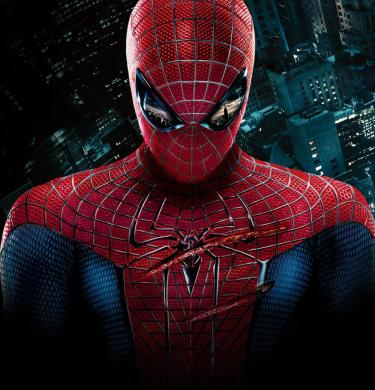
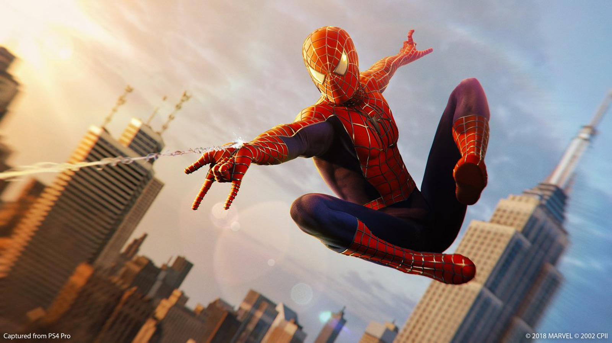
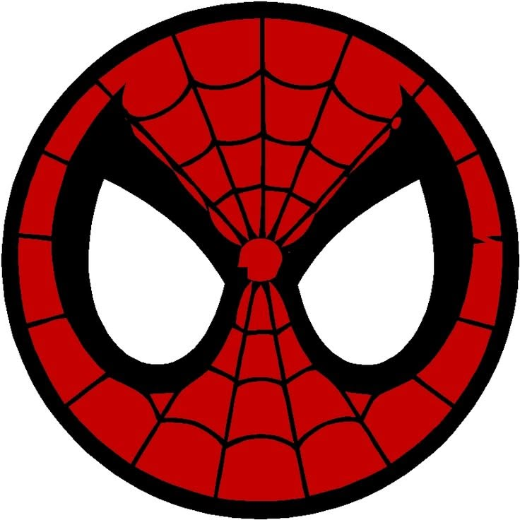

Quem é o Homem Aranha?
O Homem-Aranha é um super-herói conhecido por proteger as pessoas e enfrentar criminosos. Sua identidade mais famosa é Peter Parker, um jovem que aprende a usar seus poderes para ajudar a sociedade.
Sua história mostra que grandes poderes trazem grandes responsabilidades. Além de combater o crime, Peter precisa equilibrar sua vida pessoal com o dever de ser herói.

Poderes e Habilidades
O herói possui habilidades especiais que o ajudam a se movimentar pela cidade e a enfrentar perigos. Ele também utiliza sua inteligência para criar equipamentos.
Principais Habilidades
- Agilidade e reflexos extraordinários.
- Força sobre-humana.
- Sentido aranha, que o alerta sobre os perigos.
- Capacidade de escalar paredes.
- Uso de lançadores de teia para se locomover

Mesmo com seus poderes, ele enfrenta dificuldades como qualquer pessoa. Isso torna suas histórias mais humanas e relacionáveis com o público.
Como conhecer o herói?
Você pode explorar o universo do Homem Aranha seguindo estes passos:
- Conheça a origem de Peter Parker.
- Descubra como ele conseguiu seus poderes.
- Aprenda sobre seus aliados e principais vilões
- Entenda um pouco mais sobre a sua história lendo os quadrinhos publicados pela Marvel.
- Assista ás adaptações cinematográficas.
Principais personagens do universo do cabeça de teia:
- personagens
- Peter Parker
- Tia May
- Tio Ben
- Mary Jane Watson
- Harry Osborn
- Vilões
- Duende Verde
- Escorpião
- Doutor Octopus
- Electro
- Lagarto

Quer participar de uma atividade temática? Acesse a página de cadastro para se inscrever.